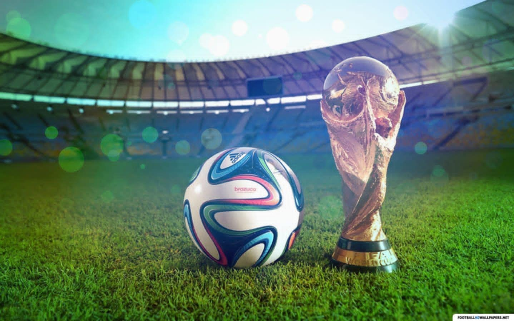

ფეხბურთი — გუნდური სპორტი, რომელშიც თერთმეტი წევრისგან შემდგარი ორი გუნდი ეთამაშება ერთმანეთს. თამაში მიმდინარეობს მართკუთხა მინდორზე საგოლე კარით ორივე ბოლოში. თამაშის მიზანი გუნდის წევრებს შორის ბურთით მანევრირებაა მოწინააღმდეგე გუნდის კარში გოლის გასატანად. ამ სპორტის მთავარი დამახასიათებელი წესის მიხედვით, მოთამაშეებს, მეკარის გარდა, ბურთზე ხელის ან მკლავის გამოყენების უფლება არ აქვთ
უფლება არ აქვთ თამაშის პერიოდში. მატჩის გამარჯვებული ის გუნდია, რომელიც უფრო მეტ გოლს გაიტანს თამაშის ბოლომდე. ფეხბურთში არის ერთი მთავარი და ოთხი დამხმარე მსაჯი, აქედან 2 გვერდითი არბიტრი, 2 პირითი ხაზის დამხმარე მსაჯი. მთავარ მსაჯს აქვს უფლება მიიღოს გადაწყვეტილება – დააჯარიმოს თუ არა გუნდი კონკრეტულ ეპიზოდში
